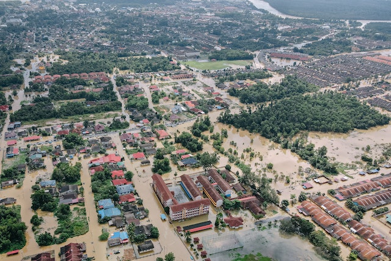
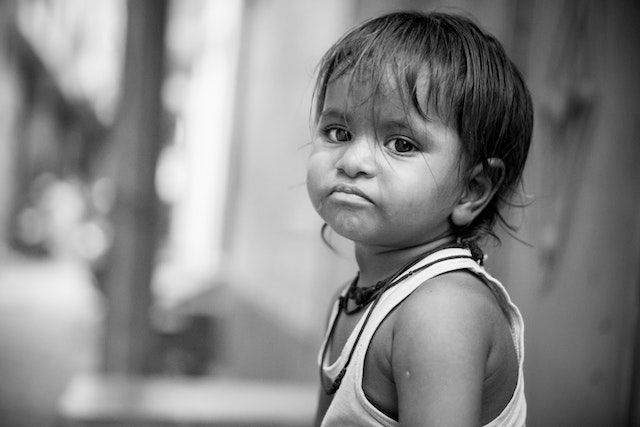
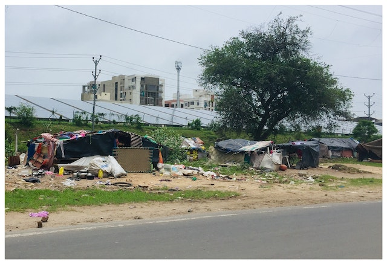

Antes do Código Civil de 2002 os quóruns para deliberação não possuíam contornos tão definidos. A partir da entrada em vigor deste diploma foram criados alguns “tipos” de quórum para as sociedades limitadas sendo alguns deles[1]:
| Quórum | Exemplo de quando se aplica | Fundamentação no código civil |
|---|---|---|
| Unanimidade | Designação de administradores não sócios(enquanto o capital não estiver integralizado). | Artigo 1.061 |
| 3/4 do capital social | Modificação do contrato socia, incorporação, fusão e a dissolução da sociedade, ou a cessação do estado de liquidação. | Inciso I do artigo 1.076 combinado com os incisos V e VI do artigo 1.071 |
| 2/3 do capital social | Designações de administradores não sócios(após a integralização do capital). | Artigo 1.061 |
| Maioria Absoluta | Designação dos administradores quando feita em ato separado0, destituição dos administradores, o modo de sua remuneração(quando não estabelecido no contrato)e pedido de concordata. | Inciso II do artig 1.076 combinado incisos II, III, IV e VIII do artigo 1.071. |
| Maioria simples | Demais casos previstos na lei ou no contrato, se este não exigir maioria mais elevada. | Inciso III do artigo 1.076. |

Em 2021, as Nações Unidas precisaval de 37,7 bilões de dólares para coordenar planos de resposta e proteção essencial que atenderiam 174 milhões de pessoas de 60 países. Com o generoso apoio de doadores e parceiros, a organização mobilizou um recorde de 20,25 bilhões de dólares e alcançou cerca de 107 milhões de pessoas.
A informação é do Relatório Anual 2022 da ONU, publicado na última quinta-feira (15), com informações do Secretariado para impulsionar a Nossa Agenda Comum e a Década de Ação para os Objetivos de Desenvolvimento Sustentável. O documento também mostrou que realizações humanitárias aconteceram acompanhadas de ações nos campos climático, da igualdade de gênero, proteção dos direitos humanos, defesa da paz e a segurança, promoção da justiça e o direito internacional, desarmamento, controle de drogas, prevenção do crime, combate ao terrorismo internacional, além da reforma das Nações Unidas.
O secretário-geral, António Guterres, ressalta que o ano passado foi de crises profundas e interligadas que crescem em escala e gravidade. Na publicação, o líder da ONU menciona a persistência da pandemia de COVID-19, a guerra na Ucrânia e o aprofundamento da crise climática com desafios que superam fronteiras e tornaram o trabalho da ONU mais essencial do que nunca. No documento, apresentado antes da reunião anual de líderes globais na próxima semana na sede da ONU, em Nova Iorque, Guterres destaca que menos de 20% das pessoas em países de baixa renda foram vacinadas contra a COVID-19 o que desencadeia uma recuperação desigual.

A ajuda humanitária é uma forma de assistência material, moral ou legal prestada para ajudar pessoas que foram impactadas por desastres naturais, guerras, conflitos e até desigualdades sociais. O objetivo do trabalho humanitário é aliviar, levar apoio e ajuda para pessoas em estado de vulnerabilidade social.
O trabalho humanitário muitas vezes é desenvolvido em regiões distantes e inseguras, marcadas por catástrofes naturais ou conflitos armados. O objetivo é apoiar a população local oferecendo assistência social, psicológica, serviços médicos, acampamentos e outras ações emergenciais.

Até o final de 2020 estima-se que sejam mais de 12 mil mortes diárias por fome no mundo, número maior do que as mortes causadas pela pandemia da COVID-19. São 122 milhões de pessoas que já viviam em situações de pobreza extrema e agora passam pela pandemia sem o apoio devido.
O número de refugiados cresceu 50% nos últimos 10 anos e mais da metade são crianças com menos de 18 anos. São 68,4 milhões de pessoas deslocadas à força no mundo, que ficaram ainda mais vulneráveis durante a pandemia.

No Brasil, o número de desempregados entre os jovens de 18 e 24 anos aumentou durante a pandemia, chegando a uma média nacional de 27,1% a maioria é de mulheres negras e pardas
Os salários diminuíram e as pessoas passaram a receber cerca de 82% dos rendimentos habituais mensais. Os trabalhadores autônomos chegam a receber apenas 60% do habitual. A população brasileira empobreceu, perdeu empregos e está diante de um cenário de fome.